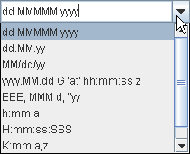

AJComboBox, which lets the user choose one of several choices, can have two very different forms. The default form is the uneditable combo box, which features a button and a drop-down list of values. The second form, called the editable combo box, features a text field with a small button abutting it. The user can type a value in the text field or click the button to display a drop-down list. Here's what the two forms of combo boxes look like in the Java look and feel:
 Uneditable combo box, before (top)
and after the button is clickedEditable combo box, before and after
the arrow button is clickedCombo boxes require little screen space, and their editable (text field) form is useful for letting the user quickly choose a value without limiting the user to the displayed values. Other components that can display one-of-many choices are groups of radio buttons and lists. Groups of radio buttons are generally the easiest for users to understand, but combo boxes can be more appropriate when space is limited or more than a few choices are available. Lists are not terribly attractive, but they're more appropriate than combo boxes when the number of items is large (say, over 20) or when selecting multiple items might be valid.
Because editable and uneditable combo boxes are so different, this section treats them separately. This section covers these topics:
- Using an Uneditable Combo Box
- Handling Events on a Combo Box
- Using an Editable Combo Box
- Providing a Custom Renderer
- The Combo Box API
- Examples that Use Combo Boxes

Using an Uneditable Combo Box
The application shown here uses an uneditable combo box for choosing a pet picture:
Try this:
- Run ComboBoxDemo (it requires release 6) using JavaTM Web Start. Or, to compile and run the example yourself, consult the example index.
- Choose an animal name from the combo box to view its picture.
- Compare the operation and GUI of this program to one that uses radio buttons: run RadioButtonDemo (it requires release 6). You might want to compare the source code as well:
ComboBoxDemo.javavs.RadioButtonDemo.java.ComboBoxDemo.java, creates an uneditable combo box and sets it up:This combo box contains an array of strings, but you could just as easily use icons instead. To put anything else into a combo box or to customize how the items in a combo box look, you need to write a custom renderer. An editable combo box would also need a custom editor. Refer to Providing a Custom Renderer for information and an example.String[] petStrings = { "Bird", "Cat", "Dog", "Rabbit", "Pig" }; //Create the combo box, select item at index 4. //Indices start at 0, so 4 specifies the pig. JComboBox petList = new JComboBox(petStrings); petList.setSelectedIndex(4); petList.addActionListener(this);The preceding code registers an action listener on the combo box. To see the action listener implementation and learn about other types of listeners supported by combo box, refer to Handling Events on a Combo Box.
No matter which constructor you use, a combo box uses a combo box model to contain and manage the items in its menu. When you initialize a combo box with an array or a vector, the combo box creates a default model object for you. As with other Swing components, you can customize a combo box in part by implementing a custom model — an object that implements the
ComboBoxModelinterface.
Note: Be careful when implementing a custom model for a combo box. TheJComboBoxmethods that change the items in the combo box's menu, such asinsertItemAt, work only if the data model implements theMutableComboBoxModelinterface (a subinterface ofComboBoxModel). Refer to the API tables to see which methods are affected.Something else to watch out for — even for uneditable combo boxes — is ensuring that your custom model fires list data events when the combo box's data or state changes. Even immutable combo box models, whose data never changes, must fire a list data event (a
CONTENTS_CHANGEDevent) when the selection changes. One way to get the list data event firing code for free is to make your combo box model a subclass ofAbstractListModel.

Handling Events on a Combo Box
Here's the code fromComboBoxDemo.javathat registers and implements an action listener on the combo box:This action listener gets the newly selected item from the combo box, uses it to compute the name of an image file, and updates a label to display the image. The combo box fires an action event when the user selects an item from the combo box's menu. See How to Write an Action Listener, for general information about implementing action listeners.public class ComboBoxDemo ... implements ActionListener { . . . petList.addActionListener(this) { . . . public void actionPerformed(ActionEvent e) { JComboBox cb = (JComboBox)e.getSource(); String petName = (String)cb.getSelectedItem(); updateLabel(petName); } . . . }Combo boxes also generate item events, which are fired when any of the items' selection state changes. Only one item at a time can be selected in a combo box, so when the user makes a new selection the previously selected item becomes unselected. Thus two item events are fired each time the user selects a different item from the menu. If the user chooses the same item, no item events are fired. Use
addItemListenerto register an item listener on a combo box. How to Write an Item Listener gives general information about implementing item listeners.Although
JComboBoxinherits methods to register listeners for low-level events — focus, key, and mouse events, for example — we recommend that you don't listen for low-level events on a combo box. Here's why: A combo box is a compound component — it is comprised of two or more other components. The combo box itself fires high-level events such as action events. Its subcomponents fire low-level events such as mouse, key, and focus events. The low-level events and the subcomponent that fires them are look-and-feel-dependent. To avoid writing look-and-feel-dependent code, you should listen only for high-level events on a compound component such as a combo box. For information about events, including a discussion about high- and low-level events, refer to Writing Event Listeners.
Using an Editable Combo Box
Here's a picture of a demo application that uses an editable combo box to enter a pattern with which to format dates.
Try this:
- Run ComboBoxDemo2 (it requires release 6) using JavaTM Web Start. Or, to compile and run the example yourself, consult the example index.
- Enter a new pattern by choosing one from the combo box's menu. The program reformats the current date and time.
- Enter a new pattern by typing one in and pressing Enter. Again the program reformats the current date and time.
The following code, taken from
ComboBoxDemo2.java, creates and sets up the combo box:This code is very similar to the previous example, but warrants a few words of explanation. The bold line of code explicitly turns on editing to allow the user to type values in. This is necessary because, by default, a combo box is not editable. This particular example allows editing on the combo box because its menu does not provide all possible date formatting patterns, just shortcuts to frequently used patterns.String[] patternExamples = { "dd MMMMM yyyy", "dd.MM.yy", "MM/dd/yy", "yyyy.MM.dd G 'at' hh:mm:ss z", "EEE, MMM d, ''yy", "h:mm a", "H:mm:ss:SSS", "K:mm a,z", "yyyy.MMMMM.dd GGG hh:mm aaa" }; . . . JComboBox patternList = new JComboBox(patternExamples); patternList.setEditable(true); patternList.addActionListener(this);An editable combo box fires an action event when the user chooses an item from the menu and when the user types Enter. Note that the menu remains unchanged when the user enters a value into the combo box. If you want, you can easily write an action listener that adds a new item to the combo box's menu each time the user types in a unique value.
See Internationalization to learn more about formatting dates and other types of data.
Providing a Custom Renderer
A combo box uses a renderer to display each item in its menu. If the combo box is uneditable, it also uses the renderer to display the currently selected item. An editable combo box, on the other hand, uses an editor to display the selected item. A renderer for a combo box must implement theListCellRendererinterface. A combo box's editor must implementComboBoxEditor. This section shows how to provide a custom renderer for an uneditable combo box.The default renderer knows how to render strings and icons. If you put other objects in a combo box, the default renderer calls the
toStringmethod to provide a string to display. You can customize the way a combo box renders itself and its items by implementing your ownListCellRenderer.Here's a picture of an application that uses a combo box with a custom renderer:
You can run CustomComboBoxDemo (it requires release 6) using JavaTM Web Start. The full source code for this example is in
CustomComboBoxDemo.java. To get the image files it requires, consult the example index.The following statements from the example create an instance of
ComboBoxRenderer(a custom class) and set up the instance as the combo box's renderer:JComboBox petList = new JComboBox(intArray); . . . ComboBoxRenderer renderer = new ComboBoxRenderer(); renderer.setPreferredSize(new Dimension(200, 130)); petList.setRenderer(renderer); petList.setMaximumRowCount(3);The last line sets the combo box's maximum row count, which determines the number of items visible when the menu is displayed. If the number of items in the combo box is larger than its maximum row count, the menu has a scroll bar. The icons are pretty big for a menu, so our code limits the number of rows to 3. Here's the implementation of
ComboBoxRenderer, a renderer that puts an icon and text side-by-side:As aclass ComboBoxRenderer extends JLabel implements ListCellRenderer { . . . public ComboBoxRenderer() { setOpaque(true); setHorizontalAlignment(CENTER); setVerticalAlignment(CENTER); } /* * This method finds the image and text corresponding * to the selected value and returns the label, set up * to display the text and image. */ public Component getListCellRendererComponent( JList list, Object value, int index, boolean isSelected, boolean cellHasFocus) { //Get the selected index. (The index param isn't //always valid, so just use the value.) int selectedIndex = ((Integer)value).intValue(); if (isSelected) { setBackground(list.getSelectionBackground()); setForeground(list.getSelectionForeground()); } else { setBackground(list.getBackground()); setForeground(list.getForeground()); } //Set the icon and text. If icon was null, say so. ImageIcon icon = images[selectedIndex]; String pet = petStrings[selectedIndex]; setIcon(icon); if (icon != null) { setText(pet); setFont(list.getFont()); } else { setUhOhText(pet + " (no image available)", list.getFont()); } return this; } . . . }ListCellRenderer,ComboBoxRendererimplements a method calledgetListCellRendererComponent, which returns a component whosepaintComponentmethod is used to display the combo box and each of its items. The easiest way to display an image and an icon is to use a label. SoComboBoxRendereris a subclass of label and returns itself. The implementation ofgetListCellRendererComponentconfigures the renderer to display the currently selected icon and its description.These arguments are passed to
getListCellRendererComponent:Note that combo boxes and lists use the same type of renderer —
JList list— a list object used behind the scenes to display the items. The example uses this object's colors to set up foreground and background colors.Object value— the object to render. AnIntegerin this example.int index— the index of the object to render.boolean isSelected— indicates whether the object to render is selected. Used by the example to determine which colors to use.boolean cellHasFocus— indicates whether the object to render has the focus.ListCellRenderer. You can save yourself some time by sharing renderers between combo boxes and lists, if it makes sense for your program.

The Combo Box API
The following tables list the commonly usedJComboBoxconstructors and methods. Other methods you are most likely to invoke on aJComboBoxobject are those it inherits from its superclasses, such assetPreferredSize. See The JComponent API for tables of commonly used inherited methods.The API for using combo boxes falls into two categories:
Setting or Getting the Items in the Combo Boxes's Menu Method Purpose JComboBox()
JComboBox(ComboBoxModel)
JComboBox(Object[])
JComboBox(Vector)Create a combo box with the specified items in its menu. A combo box created with the default constructor has no items in the menu initially. Each of the other constructors initializes the menu from its argument: a model object, an array of objects, or a Vectorof objects.void addItem(Object)
void insertItemAt(Object, int)Add or insert the specified object into the combo box's menu. The insert method places the specified object at the specified index, thus inserting it before the object currently at that index. These methods require that the combo box's data model be an instance of MutableComboBoxModel.Object getItemAt(int)
Object getSelectedItem()Get an item from the combo box's menu. void removeAllItems()
void removeItemAt(int)
void removeItem(Object)Remove one or more items from the combo box's menu. These methods require that the combo box's data model be an instance of MutableComboBoxModel.int getItemCount() Get the number of items in the combo box's menu. void setModel(ComboBoxModel)
ComboBoxModel getModel()Set or get the data model that provides the items in the combo box's menu. void setAction(Action)
Action getAction()Set or get the Actionassociated with the combo box. For further information, see How to Use Actions.
Customizing the Combo Box's Operation Method or Constructor Purpose void addActionListener(ActionListener) Add an action listener to the combo box. The listener's actionPerformedmethod is called when the user selects an item from the combo box's menu or, in an editable combo box, when the user presses Enter.void addItemListener(ItemListener) Add an item listener to the combo box. The listener's itemStateChangedmethod is called when the selection state of any of the combo box's items change.void setEditable(boolean)
boolean isEditable()Set or get whether the user can type in the combo box. void setRenderer(ListCellRenderer)
ListCellRenderer getRenderer()Set or get the object responsible for painting the selected item in the combo box. The renderer is used only when the combo box is uneditable. If the combo box is editable, the editor is used to paint the selected item instead. void setEditor(ComboBoxEditor)
ComboBoxEditor getEditor()Set or get the object responsible for painting and editing the selected item in the combo box. The editor is used only when the combo box is editable. If the combo box is uneditable, the renderer is used to paint the selected item instead.
Examples that Use Combo Boxes
This table shows the examples that useJComboBoxand where those examples are described.
Example Where Described Notes ComboBoxDemoThis section Uses an uneditable combo box. ComboBoxDemo2This section Uses an editable combo box. CustomComboBoxDemoThis section Provides a custom renderer for a combo box. TableRenderDemoHow to Use Tables (Using a Combo Box as an Editor) Shows how to use a combo box as a table cell editor.